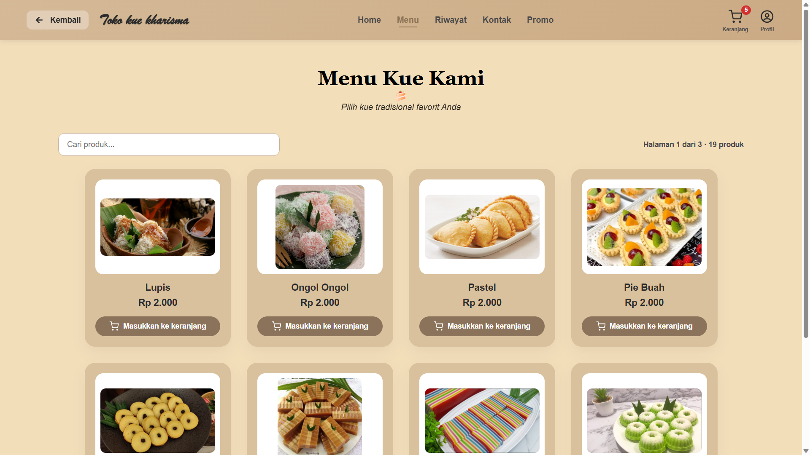
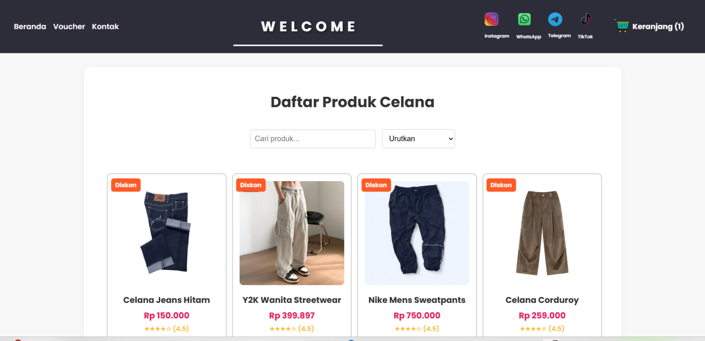

Saya adalah siswa PPLG dari SMKN 1 Ciomas yang berfokus sebagai Digital Marketing Strategist, Analyst, & Administrator. Memiliki passion kuat dalam mengeksekusi strategi pemasaran digital, manajemen administrasi data bisnis, riset kompetitor, optimasi landing page, hingga penyusunan laporan performa promosi yang terstruktur dan akurat.
Saya Dhandy Fardhan, murid dari SMKN 1 Ciomas (PPLG). Saya memiliki minat yang besar dalam bidang analisis, pemecahan masalah, serta strategi digital marketing untuk mengoptimalkan potensi sebuah proyek agar berjalan lebih efektif, terstruktur, dan tepat sasaran bisnis.
Selain merancang strategi dan menganalisis kebutuhan pasar, saya juga menguasai dasar-dasar pengembangan website. Kombinasi ini membuat saya mampu menjembatani kebutuhan bisnis digital dengan implementasi teknis secara optimal.
"Menjadi pribadi yang disiplin, bertanggung jawab, dan memiliki komitmen tinggi untuk terus belajar mengikuti perkembangan teknologi digital dan tren pasar modern."
Rekam jejak kontribusi saya dalam pengembangan proyek digital sepanjang tahun 2024 - 2025.
Pengembangan Platform Digital UMKM
Implementasi nyata dari penggabungan analisis kebutuhan fitur, sistem manajemen data, dan kesiapan pemasaran digital.

Proyek digitalisasi toko offline ke online. Sukses melahirkan fitur manajemen keranjang, panel admin kelola stok, dan integrasi payment gateway.

Merancang strategi pemasaran digital untuk bisnis fashion online. Fokus pada analisis kompetitor, riset pasar, dan perencanaan konten kreatif yang tepat sasaran.
Tertarik untuk berkolaborasi, mendiskusikan analisis proyek bisnis digital, atau membutuhkan strategi pemasaran online? Silakan hubungi saya.
📍 Ciomas, Kab. Bogor, Jawa Barat, Indonesia